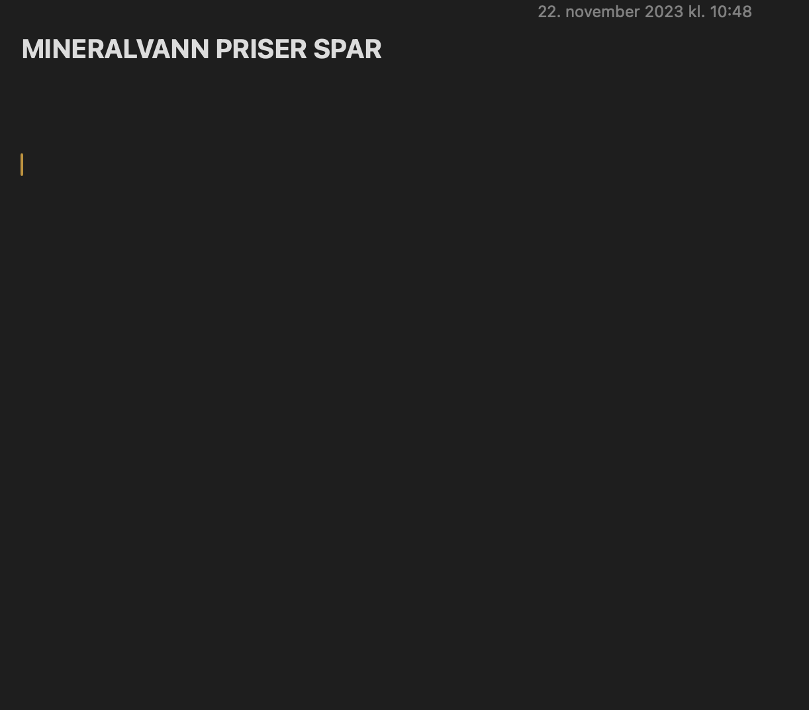
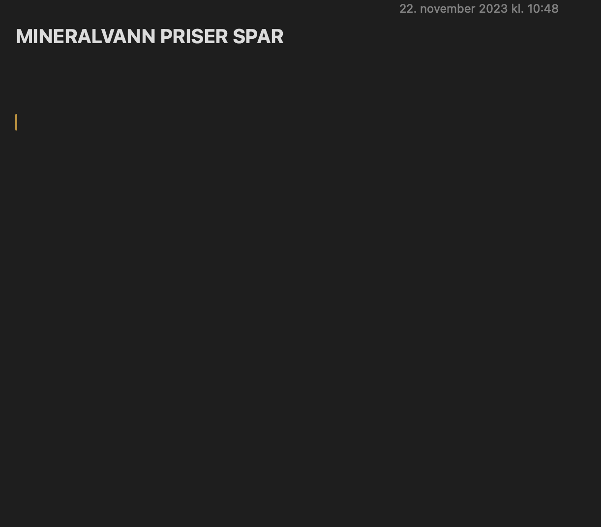
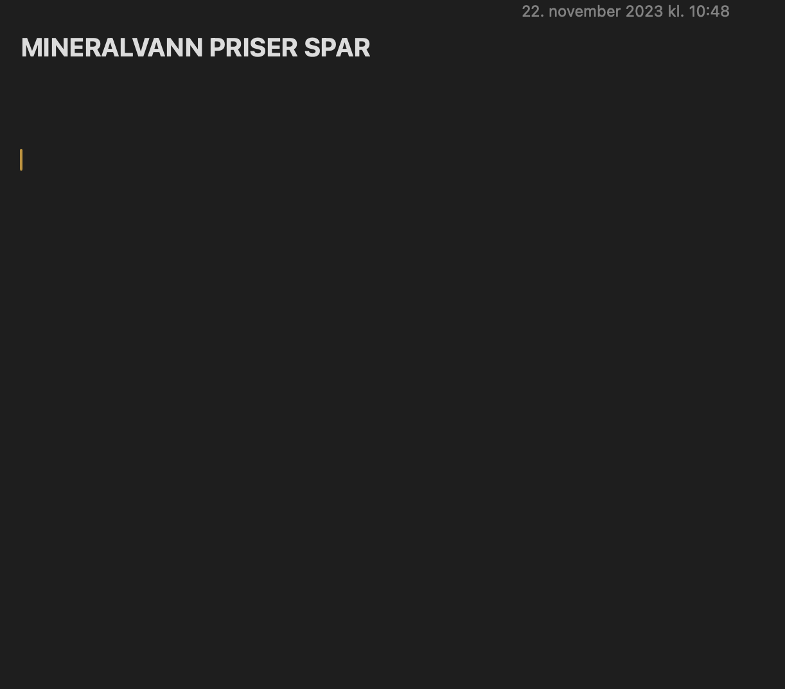

Kantineprisene ved høgskolen i Østfold har blitt et problem for studenter, mange står med utfordringer til rimelige måltider. Nistepakke eller kantinemat til lunsj? Denne situasjonen økte oppmerksomheten til Studentsamskipnaden og hva de kan gjøre for å lette ned byrden for studentene.
Alderen til studenter som går på Høgskolen i Østfold
Prisforskjellen på mineralvann på Høgskolen sammenlignet med prisene i den lokale Spar butikken
